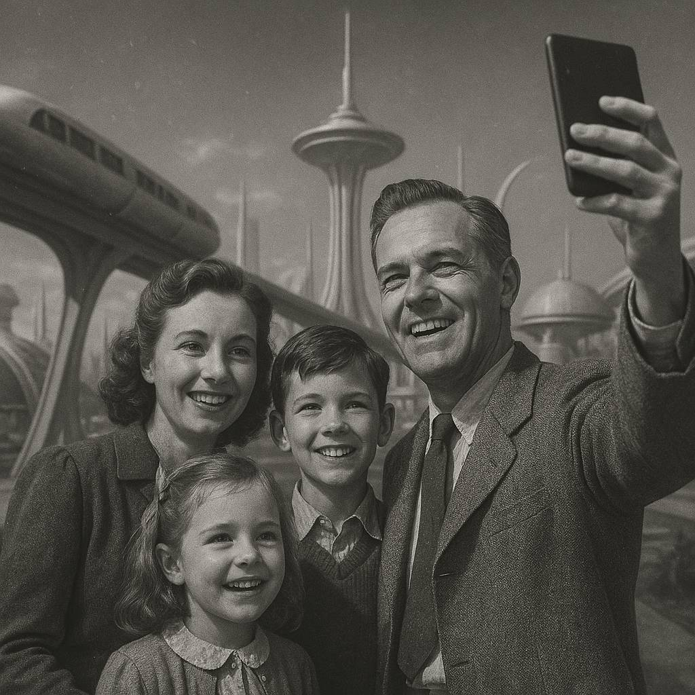
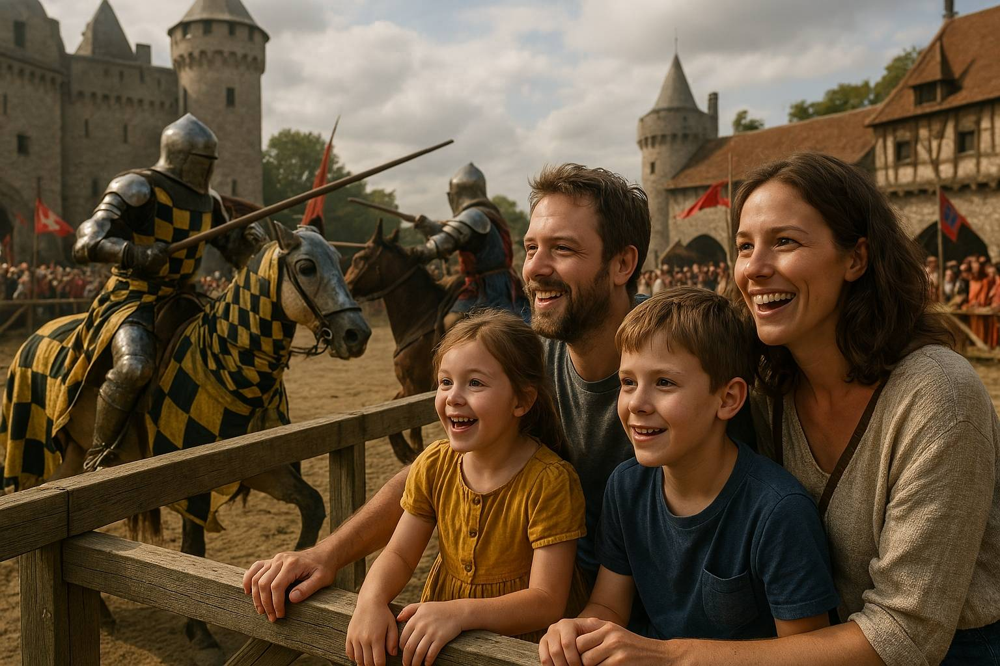

ChronoVoyage
— Explorez le passé, découvrez le futur —
ChronoVoyage vous propose des voyages exclusifs à travers les époques pour vivre des expériences inoubliables.


« Un saut au Moyen Âge pour assister à un tournoi de chevaliers ! Les enfants veulent déjà repartir. Service impeccable, sécurité garantie. »
— Les Martin
« Des vacances en 1969 pour vivre le premier pas sur la Lune ! Les guides étaient passionnants et les animations incroyables. On recommande à 100 % ! »
— Famille Moreau
« Partis de notre tribu gauloise, nous avons visité vos marchés modernes ! Tout est si coloré et parfumé. Nous avons même goûté une pizza ! Merci à vous, gens du futur. »
— Famille Astier
«Vacances en 3025 dans une mégapole du futur. Qui aurait cru que les voitures volantes existent vraiment ? Notre ado ne veut plus revenir à son époque. »
— Famille Bernard
«Voyager au temps des dinosaures ? Oui ! Les guides étaient très pros, pas un seul T-Rex à l'horizon. On recommande ! »
— Famille Petit
« Nous avons voyagé en Égypte antique avec nos deux enfants. Ils ont adoré voir les pyramides se construire sous leurs yeux ! Expérience inoubliable. »
— Famille Dubois